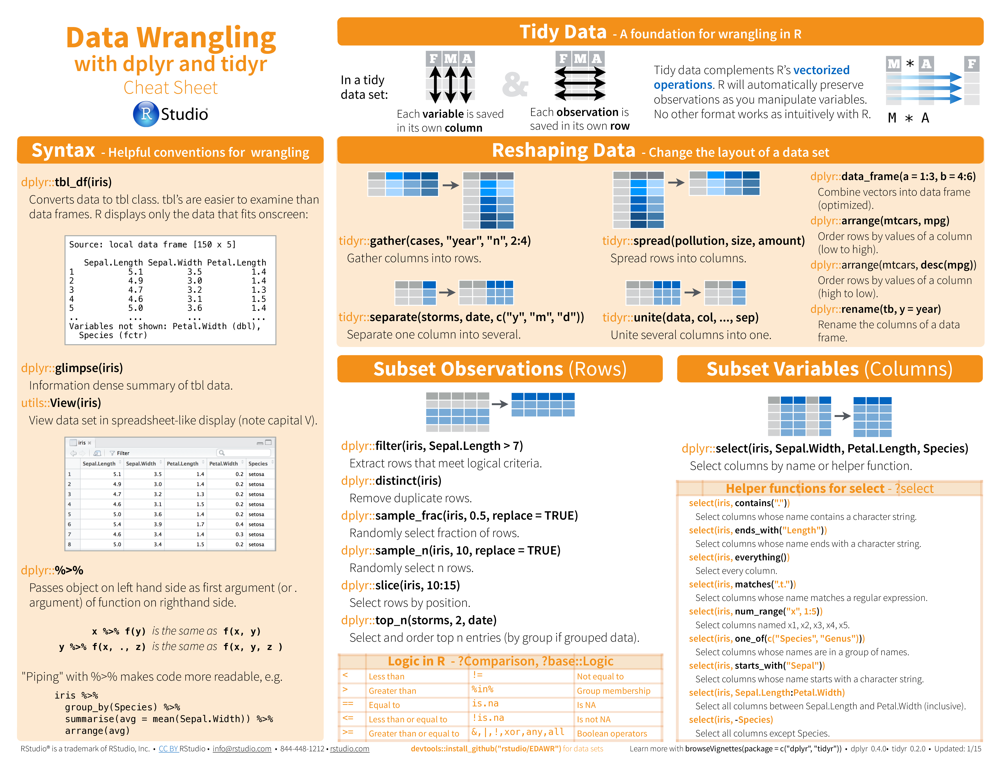
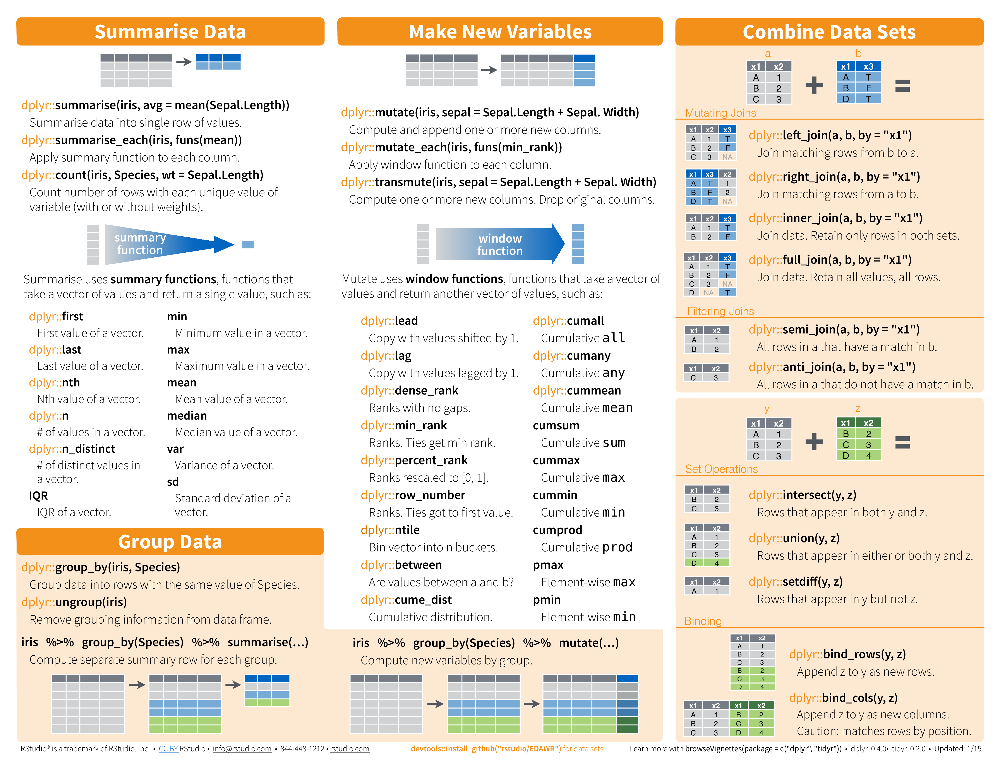

5 Data Wrangling

5.1 R Data Wrangling Packages
While there are tons of R packages out there to help you work with data, we’re going to cover the packages and functions within those packages that you’ll absolutely want and need to work with when working with data.
5.1.1 dplyr
There is a package specifically designed for helping you wrangle your data. This package is called dplyr and will allow you to easily accomplish many of the data wrangling tasks necessary. Like tidyr, this package is a core package within the tidyverse, and thus it was loaded in for you when you ran library(tidyverse) earlier. We will cover a number of functions that will help you wrangle data using dplyr:
%>%- pipe operator for chaining a sequence of operationsglimpse()- get an overview of what’s included in datasetfilter()- filter rowsselect()- select, rename, and reorder columnsrename()- rename columnsarrange()- reorder rowsmutate()- create a new columngroup_by()- group variablessummarize()- summarize information within a datasetleft_join()- combine data across data frametally()- get overall sum of values of specified column(s) or the number of rows of tibblecount()- get counts of unique values of specified column(s) (shortcut ofgroup_by()andtally())add_count()- add values ofcount()as a new columnadd_tally()- add value(s) oftally()as a new column
5.1.2 tidyr
We will also cover the tidyr package. The main functions we’ll cover from tidyr are:
unite()- combine contents of two or more columns into a single columnseparate()- separate contents of a column into two or more columns
5.1.3 janitor
The third package we’ll include here is the janitor package. While not a core tidyverse package, this tidyverse-adjacent package provides tools for cleaning messy data. The main functions we’ll cover from janitor are:
clean_names()- clean names of a data frametabyl()- get a helpful summary of a variableget_dupes()- identify duplicate observations
5.1.4 skimr
The final package we’ll discuss here is the skimr package. This package provides a quick way to summarize a data.frame or tibble within the tidy data framework. We’ll discuss its most useful function here:
-
skim()- summarize a data frame
If you have not already installed these packages, you’ll want to be sure these packages are are installed
install.packages("pacman") # Install pacman package
library("pacman") # Load pacman package
p_load(skimr, tidyr, janitor, dplyr)NOTE: The package package provides tools to conveniently manage add-on packages in the R programming language.
After executing the previous code, we have loaded the four packages.
The
p_loadfunction also checks whether a package is installed already. If the package is not installed yet, it is installed automatically by thepacmanpackage.The
p_loadfunction basically replaces the Base R library, install.packages, and require functions and allows installing and loading numerous packages simultaneously using much less R code.
5.2 The Pipe Operator
Before we get into the important functions within dplyr, it will be very useful to discuss what is known as the pipe operator.
The pipe operator looks like this in R: %>%. Whenever you see the pipe %>%, think of the word “then,”.
Generally, the pipe operator allows you to chain a number of different functions together in a particular order. If you wanted to take data frame A and carry out function B on it in R, you could depict this with an arrow pointing from A to B:
In base R syntax, it would be carried out by calling the function B on the data frame object A:
B(A)Alternatively, you could use the pipe operator (%>%):
A %>% BHowever, often you are not performing just one action on a data frame, but rather you are looking to carry out multiple functions.
Say that you want to take data frame A and carry out function B, then you want to take the output from that and then carry out function C. Subsequently you want to take the output of that and then carry out function D.
In R syntax, we would first apply function B to data frame A, then apply function C to this output, then apply function D to this output. This results in the following syntax that is hard to read because multiple calls to functions are nested within each other:
D(C(B(A)))Alternatively, you could use the pipe operator. Each time you want take the output of one function and carry out something new on that output, you will use the pipe operator:
A %>% B %>% C %>% DAnd, even more readable is when each of these steps is indedented out onto its own individual line of code:
A %>%
B %>%
C %>%
DWhile both of the previous two code examples would provide the same output, the one below is more readable, which is a large part of why pipes are used. It makes your code more understandable to you and others.
Below we’ll use this pipe operator a lot. Remember, it takes output from the left hand side and feeds it into the function that comes after the pipe as the first argument.
5.3 Filtering Data
When working with a large dataset, you’re often interested in only working with a portion of the data at any one time.
For example, if you had data on people from ages 0 to 100 years old, but you wanted to ask a question that only pertained to children, you would likely want to only work with data from those individuals who were less than 18 years old.
To do this, you would want to filter your dataset to only include data from these select individuals.
For the examples below, we’ll be using a dataset from the ggplot2 package called msleep. (You’ll learn more about this package in a later course on data visualization) For now, it’s a core tidyverse package so it’s loaded in along with the other tidyverse packages using library(tidyverse).)
This dataset includes sleep times and weights from a number of different mammals. It has 83 rows, with each row including information about a different type of animal, and 11 variables. As each row is a different animal and each column includes information about that animal, this is a wide dataset.
To get an idea of what variables are included in this data frame, you can use glimpse(). This function summarizes how many rows there are (Observations) and how many columns there are (Variables). Additionally, it gives you a glimpse into the type of data contained in each column.
Specifically, in this dataset, we know that the first column is name and that it contains a character vector (chr) and that the first three entries are “Cheetah,” “Owl monkey,” and “Mountain beaver.” It works similarly to the base R summary() function.
## take a look at the data
library(ggplot2)
glimpse(msleep)Glimpse of msleep dataset
5.3.1 Filtering Rows
If you were only interested in learning more about the sleep times of “Primates,” we could filter this dataset to include only data about those mammals that are also Primates. As we can see from glimpse(), this information is contained within the order variable. So to do this within R, we use the following syntax:
# filter to only include primates
filter(msleep, order == "Primates")## # A tibble: 12 × 11
## name genus vore order conse…¹ sleep…² sleep…³ sleep…⁴
## <chr> <chr> <chr> <chr> <chr> <dbl> <dbl> <dbl>
## 1 Owl mo… Aotus omni Prim… <NA> 17 1.8 NA
## 2 Grivet Cerc… omni Prim… lc 10 0.7 NA
## 3 Patas … Eryt… omni Prim… lc 10.9 1.1 NA
## 4 Galago Gala… omni Prim… <NA> 9.8 1.1 0.55
## 5 Human Homo omni Prim… <NA> 8 1.9 1.5
## 6 Mongoo… Lemur herbi Prim… vu 9.5 0.9 NA
## 7 Macaque Maca… omni Prim… <NA> 10.1 1.2 0.75
## 8 Slow l… Nyct… carni Prim… <NA> 11 NA NA
## 9 Chimpa… Pan omni Prim… <NA> 9.7 1.4 1.42
## 10 Baboon Papio omni Prim… <NA> 9.4 1 0.667
## 11 Potto Pero… omni Prim… lc 11 NA NA
## 12 Squirr… Saim… omni Prim… <NA> 9.6 1.4 NA
## # … with 3 more variables: awake <dbl>, brainwt <dbl>,
## # bodywt <dbl>, and abbreviated variable names
## # ¹conservation, ²sleep_total, ³sleep_rem, ⁴sleep_cycle## # A tibble: 12 × 11
## name genus vore order conse…¹ sleep…² sleep…³ sleep…⁴
## <chr> <chr> <chr> <chr> <chr> <dbl> <dbl> <dbl>
## 1 Owl mo… Aotus omni Prim… <NA> 17 1.8 NA
## 2 Grivet Cerc… omni Prim… lc 10 0.7 NA
## 3 Patas … Eryt… omni Prim… lc 10.9 1.1 NA
## 4 Galago Gala… omni Prim… <NA> 9.8 1.1 0.55
## 5 Human Homo omni Prim… <NA> 8 1.9 1.5
## 6 Mongoo… Lemur herbi Prim… vu 9.5 0.9 NA
## 7 Macaque Maca… omni Prim… <NA> 10.1 1.2 0.75
## 8 Slow l… Nyct… carni Prim… <NA> 11 NA NA
## 9 Chimpa… Pan omni Prim… <NA> 9.7 1.4 1.42
## 10 Baboon Papio omni Prim… <NA> 9.4 1 0.667
## 11 Potto Pero… omni Prim… lc 11 NA NA
## 12 Squirr… Saim… omni Prim… <NA> 9.6 1.4 NA
## # … with 3 more variables: awake <dbl>, brainwt <dbl>,
## # bodywt <dbl>, and abbreviated variable names
## # ¹conservation, ²sleep_total, ³sleep_rem, ⁴sleep_cycleNote that; we are using the equality == comparison operator that you learned about in the previous topic about operators. Also note that we have used the pipe operator to feed the msleep data frame into the filter() function.
The reason i urge you to use the piping operators (%>%)! is that the code is highly readable. This is why we use the pipe (%>%)!
Now, we have a smaller dataset of only 12 mammals (as opposed to the original 83) and we can see that the order variable column only includes “Primates.”
But, what if we were only interested in Primates who sleep more than 10 hours total per night? This information is in the sleep_total column. Fortunately, filter() also works on numeric variables.
To accomplish this, you would use the following syntax, separating the multiple filters you want to apply with a comma:
msleep %>%
filter(order == "Primates" & sleep_total > 10)Note that we have used the “greater than” comparison operator with sleep_total.
Now, we have a dataset focused in on only 5 mammals, all of which are primates who sleep for more than 10 hours a night total.
We can obtain the same result with the AND & logical operator
## # A tibble: 5 × 11
## name genus vore order conse…¹ sleep…² sleep…³ sleep…⁴
## <chr> <chr> <chr> <chr> <chr> <dbl> <dbl> <dbl>
## 1 Owl mon… Aotus omni Prim… <NA> 17 1.8 NA
## 2 Patas m… Eryt… omni Prim… lc 10.9 1.1 NA
## 3 Macaque Maca… omni Prim… <NA> 10.1 1.2 0.75
## 4 Slow lo… Nyct… carni Prim… <NA> 11 NA NA
## 5 Potto Pero… omni Prim… lc 11 NA NA
## # … with 3 more variables: awake <dbl>, brainwt <dbl>,
## # bodywt <dbl>, and abbreviated variable names
## # ¹conservation, ²sleep_total, ³sleep_rem, ⁴sleep_cycleNote that the number of columns hasn’t changed. All 11 variables are still shown in columns because the function filter() filters on rows, not columns.
5.3.2 Selecting Columns
While filter() operates on rows, it is possible to filter your dataset to only include the columns you’re interested in. To select columns so that your dataset only includes variables you’re interested in, you will use select().
Let’s start with the code we just wrote to only include primates who sleep a lot. What if we only want to include the first column (the name of the mammal) and the sleep information (included in the columns sleep_total, sleep_rem, and sleep_cycle)?
We would do this by starting with the code we just used, adding another pipe, and using the function select(). Within select(), we specify which columns we want in our output.
msleep %>%
filter(order == "Primates", sleep_total > 10) %>%
select(name, sleep_total, sleep_rem, sleep_cycle)## # A tibble: 5 × 4
## name sleep_total sleep_rem sleep_cycle
## <chr> <dbl> <dbl> <dbl>
## 1 Owl monkey 17 1.8 NA
## 2 Patas monkey 10.9 1.1 NA
## 3 Macaque 10.1 1.2 0.75
## 4 Slow loris 11 NA NA
## 5 Potto 11 NA NANow, using select() we see that we still have the five rows we filtered to before, but we only have the four columns specified using select().
Here you can hopefully see the power of the pipe operator to chain together several commands in a row. Without the pipe operator, the full command would look like this below:
select(filter(msleep, order == "Primates", sleep_total > 10), c("name", "sleep_total", "sleep_rem", "sleep_cycle"))## # A tibble: 5 × 4 ## name sleep_total sleep_rem sleep_cycle ## <chr> <dbl> <dbl> <dbl> ## 1 Owl monkey 17 1.8 NA ## 2 Patas monkey 10.9 1.1 NA ## 3 Macaque 10.1 1.2 0.75 ## 4 Slow loris 11 NA NA ## 5 Potto 11 NA NA
> > YOU SEE!!!
Definitely harder to read. We’ll stick with the above approach!
5.4 Renaming Columns
select() can also be used to rename columns. To do so, you use the syntax: new_column_name = old_column_name within select. For example, to select the same columns and rename them total, rem and cycle, you would use the following syntax:
msleep %>%
filter(order == "Primates", sleep_total > 10) %>%
select(name, total = sleep_total, rem = sleep_rem, cycle = sleep_cycle)## # A tibble: 5 × 4
## name total rem cycle
## <chr> <dbl> <dbl> <dbl>
## 1 Owl monkey 17 1.8 NA
## 2 Patas monkey 10.9 1.1 NA
## 3 Macaque 10.1 1.2 0.75
## 4 Slow loris 11 NA NA
## 5 Potto 11 NA NAIt’s important to keep in mind that when using select() to rename columns, only the specified columns will be included and renamed in the output. If you, instead, want to change the names of a few columns but return all columns in your output, you’ll want to use rename().
For example, the following, returns a data frame with all 11 columns, where the column names for three columns specified within rename() function have been renamed.
msleep %>%
filter(order == "Primates", sleep_total > 10) %>%
rename(total = sleep_total, rem = sleep_rem, cycle = sleep_cycle)## # A tibble: 5 × 11
## name genus vore order conse…¹ total rem cycle awake
## <chr> <chr> <chr> <chr> <chr> <dbl> <dbl> <dbl> <dbl>
## 1 Owl mon… Aotus omni Prim… <NA> 17 1.8 NA 7
## 2 Patas m… Eryt… omni Prim… lc 10.9 1.1 NA 13.1
## 3 Macaque Maca… omni Prim… <NA> 10.1 1.2 0.75 13.9
## 4 Slow lo… Nyct… carni Prim… <NA> 11 NA NA 13
## 5 Potto Pero… omni Prim… lc 11 NA NA 13
## # … with 2 more variables: brainwt <dbl>, bodywt <dbl>, and
## # abbreviated variable name ¹conservation5.5 Reordering
In addition to filtering rows and columns, often, you’ll want the data arranged in a particular order. It may order the columns in a logical way, or it could be to sort the data so that the data are sorted by value, i.e Ascending OR Descending. All of this can be achieved with a few simple functions.
5.5.0.1 Reordering Columns
The select() function is powerful. Not only will it filter and rename columns, but it can also be used to reorder your columns. Using our example from above, if you wanted sleep_rem to be the first sleep column and sleep_total to be the last column, all you have to do is reorder them within select(). The output from select() would then be reordered to match the order specified within select().
msleep %>%
filter(order == "Primates", sleep_total > 10) %>%
select(name, sleep_rem, sleep_cycle, sleep_total)## # A tibble: 5 × 4
## name sleep_rem sleep_cycle sleep_total
## <chr> <dbl> <dbl> <dbl>
## 1 Owl monkey 1.8 NA 17
## 2 Patas monkey 1.1 NA 10.9
## 3 Macaque 1.2 0.75 10.1
## 4 Slow loris NA NA 11
## 5 Potto NA NA 11sleep_rem name will be displayed first followed by sleep_rem, sleep_cycle, and sleep_total, just as it was specified within select().
5.5.0.2 Reordering Rows
Rows can also be reordered. To reorder a variable in ascending order , you’ll want to use arrange(). Continuing on from our example above, to now sort our rows by the amount of total sleep each mammal gets, we would use the following syntax:
msleep %>%
filter(order == "Primates", sleep_total > 10) %>%
select(name, sleep_rem, sleep_cycle, sleep_total) %>%
arrange(sleep_total)## # A tibble: 5 × 4
## name sleep_rem sleep_cycle sleep_total
## <chr> <dbl> <dbl> <dbl>
## 1 Macaque 1.2 0.75 10.1
## 2 Patas monkey 1.1 NA 10.9
## 3 Slow loris NA NA 11
## 4 Potto NA NA 11
## 5 Owl monkey 1.8 NA 17While arrange sorts variables in ascending order, it’s also possible to sort in descending order. To do this you just use desc() with the following syntax:
msleep %>%
filter(order == "Primates", sleep_total > 10) %>%
select(name, sleep_rem, sleep_cycle, sleep_total) %>%
arrange(desc(sleep_total))## # A tibble: 5 × 4
## name sleep_rem sleep_cycle sleep_total
## <chr> <dbl> <dbl> <dbl>
## 1 Owl monkey 1.8 NA 17
## 2 Slow loris NA NA 11
## 3 Potto NA NA 11
## 4 Patas monkey 1.1 NA 10.9
## 5 Macaque 1.2 0.75 10.1By putting sleep_total within desc(), arrange() will now sort your data from the primates with the longest total sleep to the shortest.
arrange() can also be used to order non-numeric variables. For example, arrange() will sort character vectors alphabetically.
msleep %>%
filter(order == "Primates", sleep_total > 10) %>%
select(name, sleep_rem, sleep_cycle, sleep_total) %>%
arrange(name)## # A tibble: 5 × 4
## name sleep_rem sleep_cycle sleep_total
## <chr> <dbl> <dbl> <dbl>
## 1 Macaque 1.2 0.75 10.1
## 2 Owl monkey 1.8 NA 17
## 3 Patas monkey 1.1 NA 10.9
## 4 Potto NA NA 11
## 5 Slow loris NA NA 11If you would like to reorder rows based on information in multiple columns, you can specify them separated by commas. This is useful if you have repeated labels in one column and want to sort within a category based on information in another column.
In the example here, if there were repeated primates, this would sort the repeats based on their total sleep.
msleep %>%
filter(order == "Primates", sleep_total > 10) %>%
select(name, sleep_rem, sleep_cycle, sleep_total) %>%
arrange(name, sleep_total)## # A tibble: 5 × 4
## name sleep_rem sleep_cycle sleep_total
## <chr> <dbl> <dbl> <dbl>
## 1 Macaque 1.2 0.75 10.1
## 2 Owl monkey 1.8 NA 17
## 3 Patas monkey 1.1 NA 10.9
## 4 Potto NA NA 11
## 5 Slow loris NA NA 115.6 Creating New Columns
You will often find when working with data that you need an additional column.
For example, if you had two datasets you wanted to combine, you may want to make a new column in each dataset called dataset. In one dataset you may put datasetA in each row. In the second dataset, you could put datasetB. This way, once you combined the data, you would be able to keep track of which dataset each row came from originally.
More often, however, you’ll likely want to create a new column that calculates a new variable based on information in a column you already have. For example, in our mammal sleep dataset, sleep_total is in hours. What if you wanted to have that information in minutes? You could create a new column with this very information!
The function mutate() was made for all of these new-column-creating situations. This function has a lot of capabilities. We’ll cover the basics here.
Returning to the msleep dataset, after filtering and re-ordering, we can create a new column with mutate(). Within mutate(), we will calculate the number of minutes each mammal sleeps by multiplying the number of hours each animal sleeps by 60 minutes.
msleep %>%
filter(order == "Primates", sleep_total > 10) %>%
select(name, sleep_rem, sleep_cycle, sleep_total) %>%
arrange(name) %>%
mutate(sleep_total_min = sleep_total * 60)## # A tibble: 5 × 5
## name sleep_rem sleep_cycle sleep_total sleep_tot…¹
## <chr> <dbl> <dbl> <dbl> <dbl>
## 1 Macaque 1.2 0.75 10.1 606
## 2 Owl monkey 1.8 NA 17 1020
## 3 Patas monkey 1.1 NA 10.9 654
## 4 Potto NA NA 11 660
## 5 Slow loris NA NA 11 660
## # … with abbreviated variable name ¹sleep_total_min